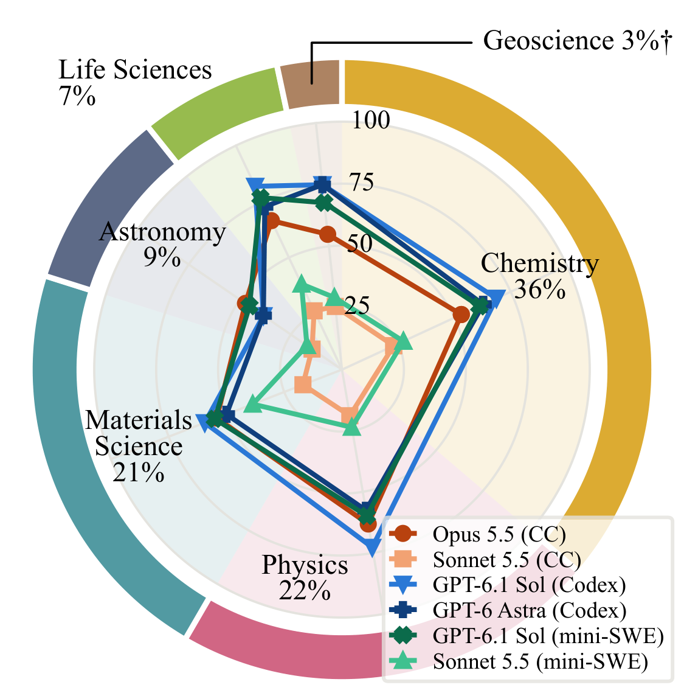
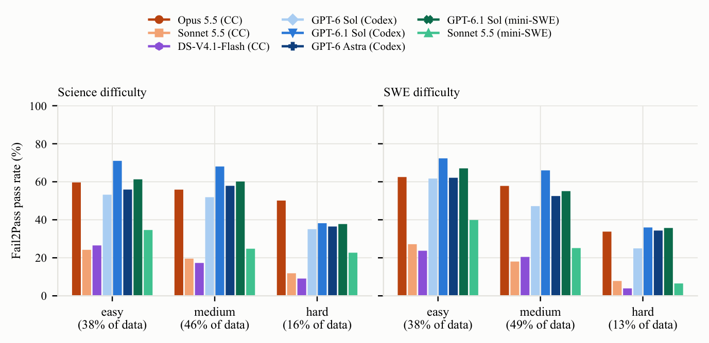
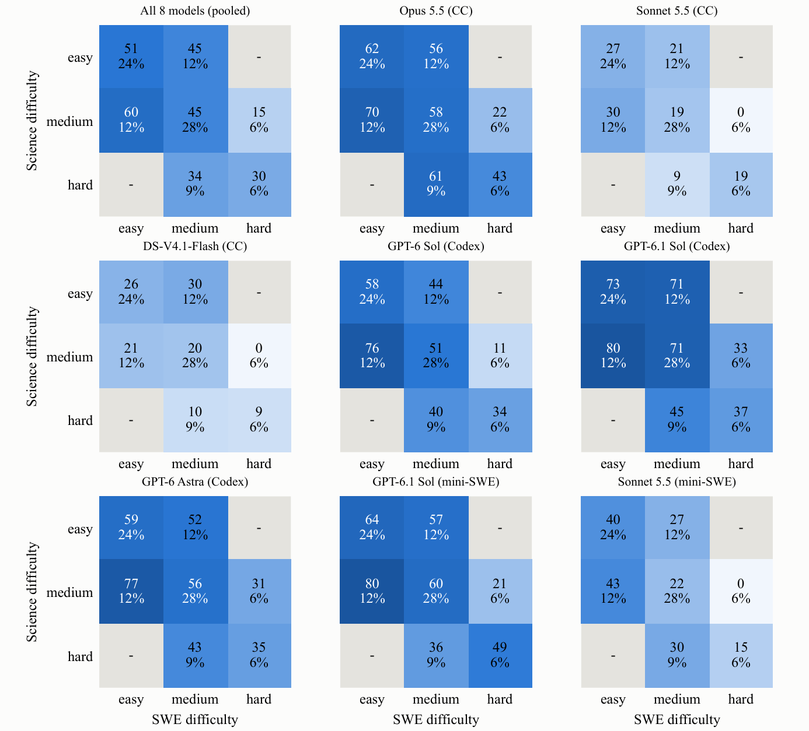
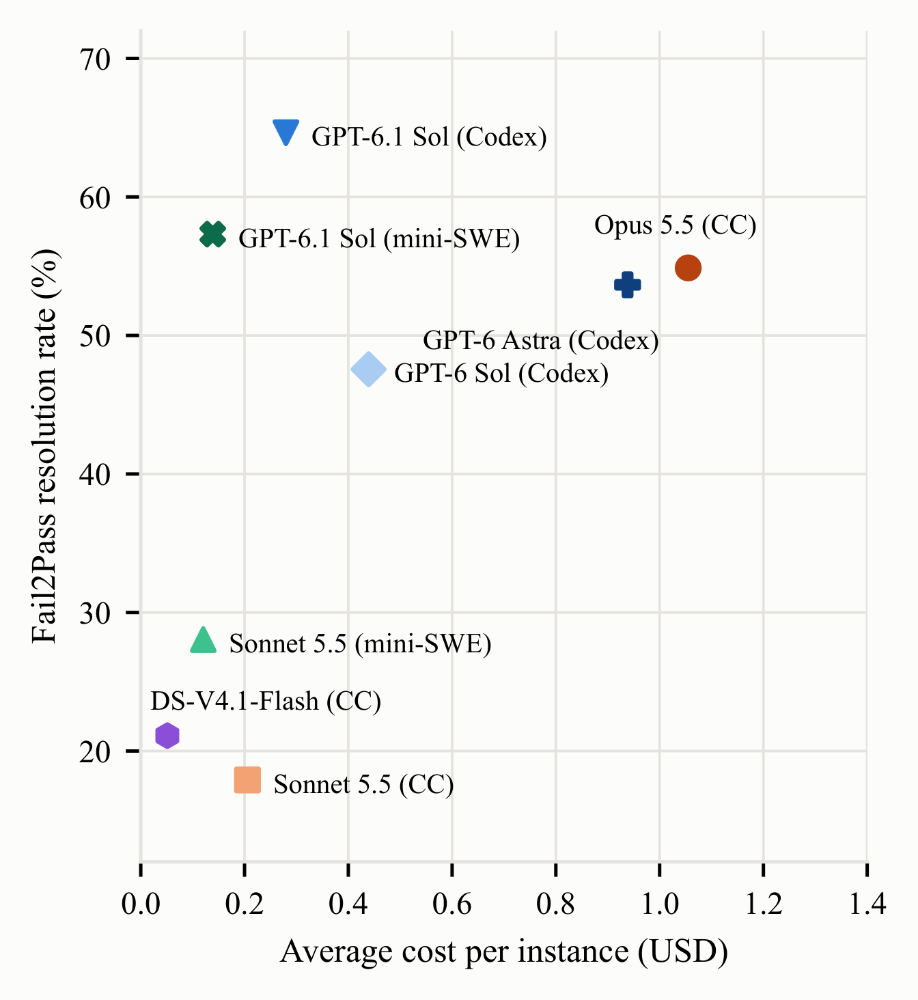
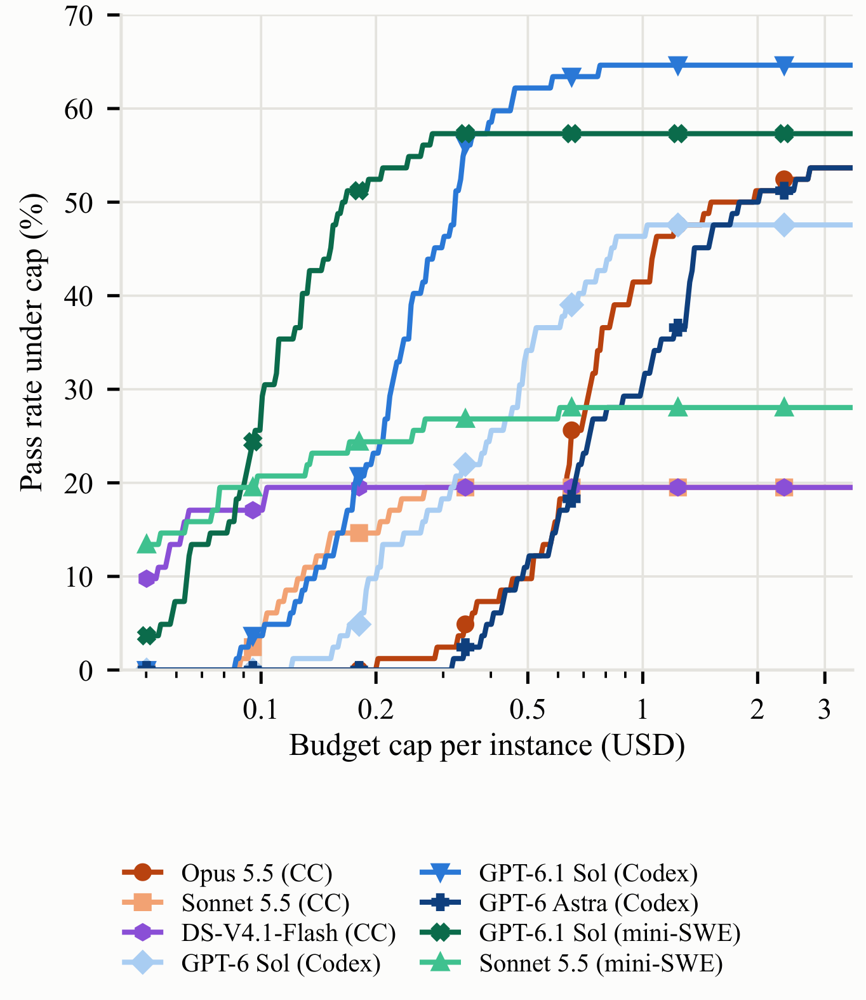
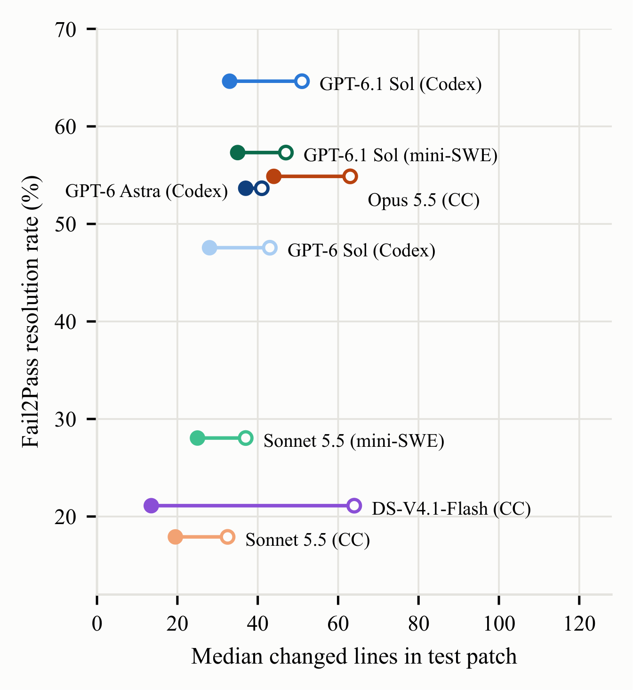

Harness
Same Model, Different Harness
Two models were run in both their native harness and mini-SWE-agent.
Harness effect · Issue F→P (%)
Harness effect · Sanitizer families
The same model can rank differently depending on its harness: GPT-6.1 Sol gains 7.4 points in Codex, while Sonnet 5.5 gains 8.1 points in mini-SWE-agent. The harness controls tool access, the execution workflow and context management.
Issue reproduction
Success by Difficulty
Issue-reproduction success by annotated science difficulty, SWE difficulty and Science/SWE composition.
Percentages under column labels give each group's share of the 149 tasks. Labels were proposed by models and reviewed task by task by researchers. On hard science tasks, Opus 5.5 leads (50%), even though GPT-6.1 Sol is ahead on easy ones (71% vs. 60%).
Sanitizer-guided generation
Triggered Families per Repository
Distinct invariant families triggered by each configuration, per repository.
GPT-6.1 Sol in Codex triggers at least one family in every repository, and 57 of 387 overall. An untriggered family may reflect unsuccessful input construction, an unreached code path, or the absence of a violation at the pinned revision, so these counts do not rank repository difficulty.
Paper figures
More Figures from the Paper





